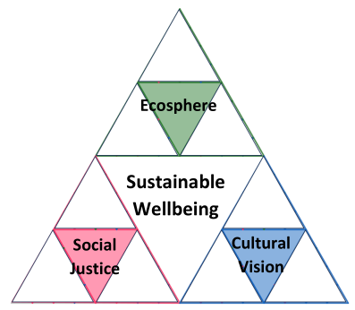
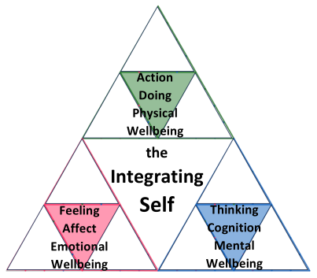
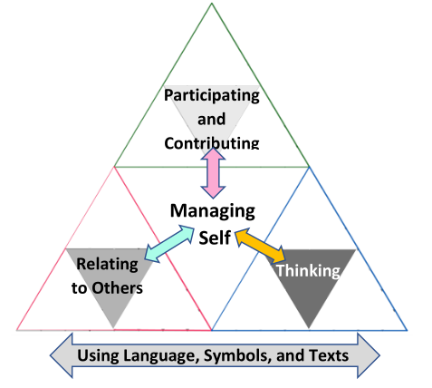

2.4 Sustainability, Wellbeing, and Education
| ⬅️ | ➡️ |
|---|
Sections:
2.4 Sustainability, Wellbeing, and Education
- 2.4.1 Section overview
- 2.4.2 Sustainability
- 2.4.3 The Sustainable Wellbeing Metacurriculum Framework, Human-Societal Level
- 2.4.4 Education for Sustainability (EfS)
- 2.4.5 Wellbeing
- 2.4.6 The Sustainable Wellbeing Metacurriculum framework, Individual-Interpersonal level
- 2.4.7 Education for Wellbeing In the NZC
- 2.4.8 Sustainable Wellbeing
2.4.1 Section overview
In this section, I review the mainstream interpretations of the meaning of sustainability and its dimensions along with some alternative views from Western academic literature and how they have influenced the school subject of Education for Sustainability, particularly in Aotearoa New Zealand. I review also the various interpretations of the term Wellbeing in the literature, how societal wellbeing may be measured, the distinction between affective and psychological wellbeing, and the literature on Education for Wellbeing, including the Te Ao Māori conception of Hauora—Te Whare Tapa Wha model (Durie, 2009)— which is embedded in the New Zealand Curriculum (NZ Ministry of Education, 2007).
In this section, I also introduce the primary elements of the SWM framework and its theoretical basis. The development of the SWM framework—through co-construction with my research participants—was the essential first goal of this study. The Human-Societal level of the framework is introduced under the heading of Sustainability, and the Individual-Interpersonal level under the heading of Wellbeing.
The section ends by considering the significance of combining Sustainability and Wellbeing in the phrase Sustainable Wellbeing and the implications of that synthesis for measures of social progress, our conception of the Self, the meaning of being human, and addressing students' diverse attitudes towards Climate Change and the sustainability crisis through educational paths that have heart.
2.4.2 Sustainability
Definitions for Sustainability
The original meaning of sustainability from the field of ecology meant simply the potential of an ecosystem to exist over time (Scott, 2012, p. 42). Huckle (2014) observes that In the 1980s the term became appropriated as a mediating term to bridge the ideological and political differences between the environment and development lobbies (p. 33) and sustainability became increasingly conflated with the term sustainable development. Perhaps the most often cited definition of sustainable development is that of the Brundtland report, Our Common Future, of the World Commission on Environment and Development (WCED), chaired by Gro Harlem Brundtland. The first paragraph of the second chapter Towards Sustainable Development states:
1. Sustainable development is development that meets the needs of the present without compromising the ability of future generations to meet their own needs. It contains within it two key concepts:
• the concept of 'needs', in particular the essential needs of the world's poor, to which overriding priority should be given; and
• the idea of limitations imposed by the state of technology and social organization on the environment's ability to meet present and future needs.
(WCED, 1987, p. 37)
The authors’ concern for global social justice is clear and there is an apparent recognition that the needs of the world’s industrialized developed nations need to decrease. In her foreword, the chairman states:
Many of the development paths of the industrialized nations are clearly unsustainable. And the development decisions of these countries, because of their great economic and political power, will have a profound effect upon the ability of all peoples to sustain human progress for generations to come
(1987, p. 7)
And yet the concepts of sustainable and development as they have been applied in the decades following the publication of Our Common Future have appeared politically irreconcilable. Sustainable Development was the underlying assumption of the United Nations’s eight Millennium Development Goals (MDG) set in 2000 and of the seventeen Sustainable Development Goals (SDG) which replaced the MDG in 2015 (See Appendix 8C-4.2 for a full list of the SDGs). SDGs 6, 12, 13, 14, and 15 relate to humanity achieving harmony with nature and protecting the planet from degradation. Goal 8, however, is concerned with achieving human development objectives. Target 8.1 acknowledges the greater need of Least Developed Countries (LDC) and sets a minimum GDP growth rate target of 7% for them (United Nations, 2015), but target 8.2 effectively supports a continued annual GDP growth rate of 3% in developed nations. Hickel (2019) argues that this is incompatible with achieving (a) any reductions in aggregate global resource use and (b) reductions in CO2 emissions rapid enough to stay within the carbon budget for 2°C. In other words, Goal 8 violates the sustainability objectives of the SDGs.
The United Nations’ Sustainable Development components
This incompatibility among the SDGs may be traced back to the Brundtland report itself which, along with its intergenerational definition, also included a triangular model of sustainable development which connected three variables: People, Planet, and Profit. Critics of this model maintain that it presumes an unavoidable inherent conflict between human needs and environmental limits which can only be reconciled through the economy (Valera & Salazar, 2020). This 3Ps model of sustainability is affirmed in the United Nations’ 2005 definition of the three aspects of sustainable development as being economic development, social development, and environmental protection, describing them also as being interdependent and mutually reinforcing pillars (United Nations General Assembly, 2005, para. 48). However, no one has specified exactly how they interdepend and mutually reinforce (Nilsson, 2018).
The SDGs have also been critiqued for not explicitly recognising the essential role of cultural perspectives and values in interpreting and constructing the meaning of sustainable development. Education is fundamental to cultural transmission and evolution. SDG 4 specifically addresses Business as Unsustainable (BaU) education in terms of its potential economic and social benefits rather than its potential to raise awareness of the environmental consequences of those benefits. As Sterling (2016) remarks This goal would benefit greatly from extended wording to reflect the fact that most educational programmes do not yet reflect the purposes and goals of sustainable development, and some may even exacerbate sustainability issues (p. 211). Education also raises the issue of the fitness for (sustainability) purpose of the wide range of world views represented by indigenous cultures compared to the hegemonic Western culture which dominates the United Nations’ implicit meaning of education. As Komatsu and Rappleye (2018) wryly observe, the world is the most educated it has ever been and yet the nearest to environmental breakdown (p. 6).
Dimensions of Sustainability and Wellbeing
To address the what, how and when questions of sustainability, various dimensional schemes beyond the Brundtland report’s People, Planet, and Profit have been devised. In 2018, publications from the United Nations described the dimensions of Sustainable Development as being economic, social and environmental (Leicht et al., 2018). New Zealand’s Education for Sustainability (EfS) curriculum (NZ Ministry of Education, 2015a) and literature (Birdsall & Glasgow, 2014; Eames & Birdsall, 2019) list environmental, social, cultural, and economic as the four aspects of sustainability. By 2022 the United Nations had redefined its dimensions of Sustainable Development as the five pillars of its Sustainable Development Goals (SDG)—People, Planet, Prosperity, Peace and Partnership (United Nations Sustainable Development Group, 2022) demonstrating the extent to which the concept of Sustainability is still very much a moving semantic target. However the domains, dimensions, spheres, or pillars of sustainability are defined, all writers seem to agree that they are complexly interrelated.
In a bid to replace the weak, trade-off, interpretation of Sustainability with a strong, critical-realist version, I adopt, in this study, a framework of three primary domains for the Sustainable Wellbeing Metacurriculum (SWM) based on the principle of humanity's relationships with, and responsibility for, our natural environment, our social world, and for ourselves as an evolving species (Michelsen et al., 2016). The domains of this SWM framework are Ecosphere, Social Justice, and Cultural Vision. The naming and characterisation of the three domains have been determined by many influences, particularly by the works of Lucie Sauvé and Rudolf Steiner. The concepts corresponding to the SWM framework domains in Sauvé’s (2009) conception of Sustainability are concentric spheres, the Ecosphere, Sociosphere, and Psychosphere. The corresponding elements in Steiner’s three-fold commonwealth are the Economic Life, the Rights Life, and the Spirit-cultural Life (Steiner, 1922).
Sauve’s Spheres
In her essay on environment-related education Being Here Together, Sauvé (2009) describes three interrelated spheres of personal and social activity: the Ecosphere, the Sociosphere, and, the Psychosphere. The Ecosphere is the domain of humanity’s relationship with the Oïkos, this house of life which we share with one another and with other living beings. The Ecosphere itself is comprised of three components: Eco-logical, Eco-nomic and Eco-sophic which bear a self-similar fractal-like relationship to the three spheres, i.e. Sauvé’s primary domains. Sauvé does not elaborate on her other two spheres in this same fractal detail, presumably because her focus in this book is environmental education. The Sociosphere is the domain of interaction with other humans, both individuals and social groups. In this sphere, we experience the benefits and challenges of living with others. That part of identity which derives from our reference culture and our sense of belonging develops here. To this sphere belongs education regarding human rights, politics, and citizenship. In the Sociosphere the other person is understood as on the same level as oneself, as an end in him or herself and not as an instrument (Miguelez 1997, cited in Sauvé, 2009, p. 332). The Psychosphere for Sauvé is the locus of identity construction, where the self is forged through confronting its own characteristics, abilities, and limitations. Through entering into relationships within the Ecosphere and Sociosphere, the self enters a process of continual individuation and integration of the elements of the self into a whole. In the Psychosphere, self-esteem, autonomy, reflexivity, and the capacity for critical distancing are developed. While Sauvé’s Ecosphere references humanity as a whole, her Sociosphere addresses the interpersonal and her Psychosphere the intrapersonal Self, rather than the worldviews and evolution of human cultures. In this cultural sense, the SWM framework’s domain of Cultural Vision aligns more closely with Rudolf Steiner’s (1922) concept of the Spiritual-Cultural life.
Steiner’s 3-Fold Commonwealth
For Rudolf Steiner a healthy human society, the ‘body social’, had to be aware of and uphold three interrelated but independent lives: The Economic Life, the Rights Life, and the Spiritual-Cultural Life. The economic life is concerned with everything in the way of commodities that humanity needs and produces from nature including their circulation and consumption. The life of public rights Steiner also described as whatever must exist in the body social because of men's (sic) personal relations to one another which includes the life of the State where State means a community possessing common rights. Steiner (1922) regarded the term Spiritual-Cultural to be more accurately expressed as Everything that rests on the natural endowments of each single human being—everything that plays a part in the body social on the ground of the natural endowments, both spiritual and physical, of the individual (p. 56). Steiner saw Fraternity, Equality, and Liberty, the social ideals that inspired the French Revolution, as being the proper guiding principles for the economic, rights, and spirit-cultural lives, respectively. He sympathised with those critics who pointed out the, apparently, irreconcilable tensions between these ideals, yet emphasised their aspirational power for the collective imagination of humankind. He specifically rejected the idea that these tensions could be resolved by centralising control of the three independent lives in an all-powerful state. Steiner, like Marx and many other influential thinkers of his time—who were also inspired by the ideals of Fraternity, Equality, and Liberty and also recognised environmental concerns such as the soil destruction being wrought by capitalist agriculture (Rappleye & Komatsu, 2020)—does not appear to have anticipated the pending impact of anthropogenic Climate Change and finite global environmental limits on humanity worldwide.
Steiner’s interpretation of Self-similarity
Steiner draws a connection between his concept of a healthy human society, the body social and the individual human organism which is, in essence, a self-similar fractal-like analogy, although, of course, writing in the early part of the last century, he never applied that term to his own thinking. The three lives of the body social are for Steiner an expression of the three-fold nature of homo sapiens as willing, feeling and thinking beings, with these subjective faculties being physiologically associated with the limb-digestive, chest rhythmic, and head nerve-sense systems of the body respectively (Steiner, 1919, 1922). In more recent literature willing, feeling and thinking are also referred to widely as the action, affective, and cognitive domains of learning (Eames & Birdsall, 2019); or hands, heart, and head (Birdsall & Glasgow, 2014; Giangrande et al., 2019; Napal et al., 2020; Trott, 2020).
Steiner describes how each of the three anatomical structures, the digestive system with the limbs, the chest system, and the head system, contains within it, components related to the other two. The head, for instance, has the head-proper component of the brain but also the chest breathing-related system component of the nose, ear, and their connecting sinuses; and the digestive-limb-related system of the jaws and teeth, particularly the limb-like lower jaw (1919, pp. 182–183). Steiner stressed that he did not wish to take physiological scientific truth and transplant it literally onto the social system. Rather he wished to use the human body as an object lesson for training human thought and feeling to a sense of what organic life requires, and then to apply this perceptive sense to the body social (1922, p. 52).
2.4.3 The Sustainable Wellbeing Metacurriculum Framework, Human-Societal Level
I use three domains as the starting point for the co-construction of a metacurriculum framework linking sustainable wellbeing to the traditional disciplinary learning areas of the secondary school curriculum. These three domains; Ecosphere, Global Justice, and Cultural Vision—representing humanity’s relationships with its natural environment, its social world, and itself respectively—are shown diagrammatically in Figure 2-7.
The diagram shows the top two layers of the Human-Societal level of the multi-levelled, multi-layered, form of the Sustainable Wellbeing Metacurriculum (SWM) framework. The full framework is structurally a tri-polar version of the Sierpinski Fractal described in Section 2.3.5, and Figure 2-3 which I call a Triadic Sierpinski Fractal (TSF). The self-similar fractal structure of the TSF represents the intimately entwined yet always distinguishable relationship of the three domains to one another. In this section, and Section 2.4.6, I present the theoretical basis for the initial SWM framework’s Human-Societal level domains and Individual-Interpersonal level domains. In Section 2.6.2, I use multi-layered TSF diagrams to illustrate the full fractal self-similar representation of the SWM framework.
Sustainable Wellbeing at the centre of Figure 2-7, functions as the visionary attractor for the Human-Societal level of the framework, inspiring and coordinating the system's self-organisation. The first objective of this study was the elaboration of the SWM framework—through a co-construction process with my research participants—to a stage where it could be of practical curriculum planning value for teachers developing a schoolwide SWM for years 11 to 13 students.
Figure 2-7 The three domains of the Sustainable Wellbeing Metacurriculum (SWM) on the Human-Societal level centred on the Sustainable Wellbeing of Humankind.

A fundamental strength of this three-fold structure for sustainability is that the domains are expressions at the human-societal level of the three primary embodied domains of individual wellbeing at the individual-interpersonal level; Action, Feeling, and Thinking, i.e the kinesthetic (behavioural), affective (socio-emotional), and cognitive (mental) domains of learning, (Leicht et al., 2018; Räthzel & Uzzell, 2009; Tilbury, 1995). Central to the three-fold domains are Sustainable Wellbeing at the human-societal level, and the Integrating Self — the locus of spiritual wellbeing—at the individual-interpersonal level. From a complexity point of view — Sustainable Wellbeing and the Integrating Self — serve as labels for system attractors at each of these fractally related levels, albeit attractors of very different duration, character and stages of emergence or incarnation, as Steiner (1907) described what might also be described as the ‘emergence’ of the Self at birth (Dahlin, 2017). The complex interrelationship of sustainability domains is modelled in the SWM framework using the Sierpinski triangle and scale-free social networks introduced in Section 2.3 and as further elaborated in Section 2.6.2.
The exclusion of Economic development as a primary domain from the SWM framework requires explanation. The natural environment, society, and humanity itself are realities with which humanity has relationships. ‘The economy’ by contrast is an abstraction, a cultural construct which has become steeped in unexamined assumptions of what ‘the economy’ must be, while its superficially varied ideological expressions are fiercely politically contested. SDG target 9.2, for instance, maintains that economic development needs to be industrial with no explanation of whether this is a means to an end or an end in itself (Hickel, 2019). Citing the writings of Bruno Latour, Choat (2018) makes a similar argument for the deployment of the term Capitalism as a catch-all explanation:
Capitalism — like the State, Empires and Classes—is at most a result or effect of myriad interactions, mediations and networks (Latour, 1993: 120). In this sense, ‘capitalism does not exist’ (Latour, 1988: 173): to talk of capitalism is to obscure the relations that we should be examining and to substantialise what are in reality supple and contingent attachments and interactions that can be easily made and unmade.
(Latour, 2013, as cited in, Choat, 2018)
The Economy as a concept is related to the three primary domains of the SWM framework in a manner analogous to how the term physiology is related to the nerve-sense, rhythmic-circulatory, and limb-metabolic systems of the physical body. It is an aspect of them all and its expression in each is dependent upon the character and direction of the relationships these organic systems are maintaining with one another and their environment. Ecosphere, Global Justice, and Cultural Vision are also abstractions but they are clearly defined in terms of fluidly evolving relationships with definite realities, the natural environment, the global human population, and the evolving trajectory of our species. The SWM framework adopts the strong sustainability principle that the Economy cannot meaningfully be separated from the environment and the wellbeing of ecosystems upon which all its aspects ultimately depend rather than Weak sustainability involves existing economic and social issues being refocused to include environmental goals. While many initiatives under weak sustainability do indeed improve the environment and reduce poverty, at best their efforts achieve no more than making the world less unsustainable (Cartwright et al., 2009; Scott, 2012).
2.4.4 Education for Sustainability (EfS)
2.4.4.1 What is EfS? Definitions and Key Objectives
2.4.4.1.1 History of EfS, the United Nations’ SDGs and EE
Almost a decade ago, Lotz-Sisitka and Price (2016) observed that engagement with the processes of integrating environment and sustainability concepts, knowledge, pedagogical practices and values into national curricula is worldwide (p. 3). The word sustainability appears ten times in the New Zealand Curriculum (NZC) (NZ Ministry of Education, 2007) including under the principle of Future Focus and the key competency of Participating and contributing in the phrase sustainability of social, cultural, physical, and economic environments (p. 13). Education for Sustainability (EfS) has long been recognised within the curriculum (NZ Ministry of Education, 2015a) but in 2024 it continues to languish as a marginal subject within the Social Sciences learning area. In 2022 less than 1% of senior students nationwide were participating in even the most popular of the NCEA Environmental Sustainability standards (New Zealand Qualification Authority, 2023b).
The Journal of Environmental Education’s inaugural issue in 1969, contained the following definition: Environmental Education is aimed at producing a citizenry that is knowledgeable concerning the biophysical environment and its associated problems, aware of how to help solve these problems, and motivated to work toward their solution (Stapp, 1969, p. 30, emphases in the original). Six years later a United Nations-ratified agreement, which became known as the Belgrade Charter described the goal of Environmental Education (EE) as being to develop a world population that is aware of, and concerned about, the environment and its associated problems, and which has the knowledge, skills, attitudes, motivations and commitment to work individually and collectively toward solutions to current problems, and the prevention of new ones (UNESCO-UNEP, 1975, p. 3). The United Nations’ conception of EE was given a yet more action-oriented framing in the Tbilisi Declaration which came out of the first Intergovernmental Conference on Environmental Education, in Tbilisi, Georgia, USSR in 1977. The focus of EE according to the Tbilisi Declaration is: to successfully acquire the knowledge, values, attitudes, and practical skills to participateresponsibly and effectively in anticipating and solving environmental problems, and in the management of the quality of the environment (UNESCO 1978, 2).
During the 1980s the concept of EE became overtaken by the idea of Sustainable Development (SD) which expanded environmental protection to include the economic and social aspects of sustainability that underpinned the Brundtland report of 1987. The Brundtland report suggested that the world’s teachers have a crucial role to play in helping to bring about the extensive social changes needed for sustainable development (Shephard, 2020). The Earth Summit of 1992 in Rio de Janeiro reaffirmed the significance of education for SD in its conference document titled Agenda 21 (Eames & Mardon, 2020; Shephard, 2020). The first use of the acronym EEFS (Environmental Education for Sustainability) arose also at this time — perhaps as a sceptical reaction to the implausibility of sustainable in the same sentence as development — and with it a degree of confusion about how, or if, EEFS differed from the notion of education for SD (Tilbury, 1995). While the rest of the world has spoken about Education for Sustainable Development (ESD), EEFS or EfS have been the preferred terms in New Zealand government publications since the 1990s (Shephard, 2020).
It was the 1992 Rio de Janeiro Earth Summit that provided the original inspiration for the now hugely popular New Zealand Enviroschools movement founded with the help of the University of Waikato in Hamilton by a group of City Councillors who attended the summit (Eames & Mardon, 2020). The orientation of these first NZ eco-schools was simply EE rather than either education for SD or EEFS. Eames and Mardon (2020) reported that The Enviroschools Programme has grown from the original three pilot schools in 1993 to now include nearly 1200 schools and kindergartens, supported by 120 facilitators, 16 regional coordinators, and over 100 partner organisations (p. 56). Despite the success of the Enviroschools movement and various efforts to establish and sustain Environmental Education and EfS practice in New Zealand schools and early childhood education over recent decades, research commissioned by the Ministry of Education and conducted by the New Zealand Council for Educational Research (NZCER) found that while there have been many pockets of progress and development across all of these areas over the past 11 years, this progress is unevenly spread and has lacked high-level coordination (Bolstad et al., 2015, p. 14). Eames et al. (2010) note that ongoing challenges remain for fostering EfS in large primary and secondary schools: building a strong local knowledge base in EfS, and developing a coherent education strategy for Aotearoa New Zealand EfS (p. 2). A more recent report for the Enviroschools organisation found that while the movement had many positive impacts on schools and student learning, Most respondents did not think that Enviroschools supported transitions between [Early Childhood Education] ECE centres, primary and secondary schools (Wypych & Field, 2021, p. 5). The practicalities of working inter-departmentally in secondary schools may moderate the uptake of cross-curricular EfS courses, combined for instance with outdoor education, in some schools (Cosgriff & Gillespie, 2011). There are also issues related to the regulations around how credits are to be accumulated to achieve university entrance that can discourage teachers wanting to devise courses that reflect 21st-century [realities] (Hipkins & Spiller, 2012).
2.4.4.1.2 sustainable global citizenship
While the manifestation of EfS in schools has prioritised the Environmental domain of sustainability, the role of education in fostering systemic societal change for sustainability through individual and collective agency continues to be stressed in the EfS literature. With the caveat that a universal, all-encompassing definition of sustainability education is unfeasible, Koskela and Paloniemi offer the following definition:
Sustainability education refers to education that encourages action towards sustainability transformations, i.e. the societal changes that aim to secure the well-being of humans and the other natural world as well as just and peaceful societies within the planetary boundaries.
(Koskela & Paloniemi, 2022, p. 2)
These authors further emphasise that behaviour change as a goal of sustainability education is not the same thing as agency. Behaviour change implies that particular behaviour patterns are being altered in predetermined ways, while sustainability agency refers to the capacity to be attentive and proactive in finding possibilities to either act in a more sustainable manner or to advance changes towards sustainability individually, through others, or with others (p. 7). Granados-Sánchez (2023)uses the phrase sustainable global citizenship in preference to Ecological citizenship,Environmental citizenship, or global citizenship as defined by the United Nations;
because the concepts of sustainability and sustainable development are more holistic and intentional than that of the environment and, moreover, direct us towards a horizon. ...
In addition, using sustainable global citizenship makes it easier to link the field of citizenship with that of education for sustainability, two fields that until now have evolved in parallel and without a clear and determined connection that must be solved.
(p. 5)
The United Nations’ concept of global citizenship has also been criticised as being dominated by elitist Western visions of a Utopian global citizenship. An alternative Pluralist interpretation of global citizenship effectively requires it to be locally defined (Abdi, 2015 cited in Granados-Sánchez, 2023)
2.4.4.2 The role of teachers and schools
The extent to which school teachers and schools can or should be expected to address the sustainability crisis is debated by teachers around the world (Shephard, 2020). The mounting evidence of environmental degradation and its impacts on human wellbeing, I argue, as described in my opening section, make them impossible to ignore for teachers genuinely and professionally committed to the wellbeing of their students. As Sauvé (2009) argues, Through [environmental] education, we contribute to major cultural change and toward a culture of belonging and commitment. Here, environmental education is ontogenetic: learning to be here together, fully, and ethically (p. 328). Yet, for teachers to take a principled stand despite or without an appreciation of their communities' values can be a serious strategic error, if the possible consequences, timing and context are not thought through. On 16 October 2020, outside his school in a Paris suburb, a history teacher, Samuel Paty, was beheaded by an 18-year-old attacker and suspected Islamist. Earlier that month, the teacher had used cartoons of the Prophet Mohammad in a class on freedom of expression, angering some Muslim parents (Reuters Staff, 2020). While Aotearoa New Zealand teachers have to date been less likely to face such violent values-based extremism, our nation no longer feels as immune as it once seemed since the 2019 anti-Islamist terrorist attack on mosques in Christchurch (Royal Commission of Inquiry, 2020). Nevertheless, very real political, racial, and religious tensions are as present in New Zealand classrooms as they are in classrooms anywhere on the planet. Discussing ecological sustainability, for instance, with students in rural areas whose parents’ livelihoods are tied to unsustainable farming practices can elicit emotionally charged pushback, an experience I can personally attest to.
To be effective, in light of the very real dangers, education that puts Sustainability and Wellbeing at its heart must give teachers the social license, encouragement, protection and means to put the contentious issues in front of students for their critical examination. The most effective contribution that educational research can make to society at this time, in my view, is to facilitate the co-construction of a theoretically coherent metacurriculum framework that empowers teachers, and senior secondary and tertiary level students to address the sustainability crisis head-on.
There are signs that societal trends toward increasing the priority of such education are already underway. Environmental Sustainability standards were first intended to be made available by 2009 at levels 2 and 3 of New Zealand’s NCEA school-leaving qualification (Morey, 2008). Education for sustainability is being used to design cross-curricular courses to study real-world issues of relevance to students and create alternatives to more traditionally designed science courses that encourage students’ engagement with science for citizenship (Birdsall & Glasgow, 2014; Hipkins & Spiller, 2012). Bolstad et al. (2015) describe a pilot project designed to explore how the future focus theme of sustainability, in the New Zealand Curriculum (NZC) (NZ Ministry of Education, 2007) can be integrated into the secondary school curriculum by drawing on distinctive ecological knowledge and practices that can be accessed within English and social sciences courses. How Aotearoa New Zealand secondary schools might be enabled and encouraged to undertake the radical but critically significant challenge of transforming education for sustainability from being a marginal learning area to being the central focus of their years 9 through 13 curriculum, is the focus of this research project.
2.4.5 Wellbeing
2.4.5.1 Wellbeing Overview
The Western concept of human wellbeing has followed more or less the same path under the influence of the same cultural assumptions as our concept of sustainability and economic development. The difficulty of defining exactly what we mean by wellbeing is reflected in the variety of terms used interchangeably for it including quality of life, life satisfaction, welfare, utility, preference, happiness, prosperity, human flourishing, and human development (Scott, 2012). The United Nations’ Brundtland definition of Sustainable Development uses the no less vague and problematic term ‘needs’ to encompass the great variety of factors that sustain the wellbeing of people and living systems in general.
Through the twentieth and into the twenty-first century the idea of quality of life being equivalent to material wellbeing became expressed in terms of economic growth, initially as measured by gross national product (GNP) and then later by gross domestic product (GDP) (Offer, 2006; Veenhoven, 1996). Wellbeing and social welfare have been increasingly acknowledged as complex realities that are not equivalent and cannot be adequately measured by aggregate economic growth, yet unsustainable consumption of goods and services still dominates public policy assumptions about wellbeing (Marks et al., 2006; cited in Scott, 2012).
A second theme of mainstream wellbeing debates has been the reduction of wellbeing to individual preferences and self-actualisation, which overlooks the role of socio-political structures in determining the limits of wellbeing especially for minority groups such as the disabled (Edwards & Imrie, 2008), but also for all of us in respect of environmental degradation. As such, Sustainability requires us to think as a collective, rather than what we as individuals can get from or give to a community; it asks us to think about human wellbeing as a common project and to make sacrifices for people with whom we will never have a relationship (Scott, 2012, p. 50). Encouraging people to think of themselves as autonomous, enterprising individuals responsible only for their own welfare is an integral part of the one-sided neoliberal economic project but it is also a conception of the self, which is long embedded in Western culture (Rose, 1990). This tension is also implicit in the three-domain SWM model I have proposed and it can only be resolved I will argue, through a complexivist understanding of the emergence of a self-organised global self of humankind arising from the free collaboration of aware, autonomous individuals, something which can still only be expressed as an aspiration in our time.
A third tension, also symptomatic of the Western culture‘s logical positivist history, is between attempts to articulate a realistic ontology of wellbeing and the empirical need to define wellbeing with sufficient clarity and consensus to make it measurable for public policy purposes. Nevertheless, the term is useful in that it evokes associations with values including but transcending the purely material needs of life. In essence, [Wellbeing] is conceptually useful in drawing into direct relationship the social, psychological, ‘spiritual’ and physical dimensions to which many discussions refer (Dinham, 2007, p. 183).
2.4.5.2 Measuring Wellbeing
GDP Alternatives
Gross Domestic Product (GDP), invented after the Great Depression in the 1930–1940s, is probably the most widely used measure of nations’ economic well-being and social progress but has also been criticised as ignoring other indicators of social progress such as subjective well-being, equity, and environmental sustainability (Wang & Chen, 2022, p. 1). GDP takes no account of the distribution of economic growth across society which then allows glaring inequalities to be ignored and the interests of minorities to be consistently overlooked (Dasgupta, 2001; Nussbaum, 2000). Dissatisfaction with GNP gave rise in the 1960s to the concept of Quality of Life (QoL), a more complex and multidimensional goal of societal progress (Noll, 1996). QoL policies aimed at non-monetary welfare distribution used objective social Indicators such as life expectancy, employment and education levels (Erikson, 1993). However, even as recently as 2022, there are still very few measures of wellbeing devised or in use at the national and regional levels that effectively reflect aspects of wellbeing beyond those quantified in GDP (Wang & Chen, 2022).
Reconceiving Wellbeing
In the 1990s Amartya Sen introduced the concept of capabilities as the basis of human wellbeing, arguing that measures of equality of resources and welfare are insufficient for achieving social justice (Sen, 1993). Focusing only on individual satisfaction, for instance, overlooks the fact that people adapt their expectations to their circumstances (Scott, 2012) and the circumstances of different groups are already far from equitable. Sen locates the basis of wellbeing in the opportunity to fulfil one’s potential rather than in the assumed possession of rights or resources. The capabilities approach does not however solve the problem of defining what QoL opportunities should look like and how to measure it.
The needs approach to wellbeing as popularised by Abraham Maslow in the 1960s is similar in many ways to the capabilities approach. Maslow’s hierarchy of human needs originally comprised five levels: Biological and physiological; Safety; Social; Esteem; and Self-actualization (McCleod, 2013). He amended his model, in 1969, adding self-transcendence as a step beyond self-actualization (Koltko-Rivera, 2006).
Maslow suggested that people satisfy needs from the most basic to higher-level needs progressively (McCleod, 2013). In contrast to this sequential hierarchy of needs satisfaction, Nussbaum’s (2003) list of ten central human capabilities must be attained holistically:
in some form, all [ten] are part of a minimum account of social justice: a society that does not guarantee these to all its citizens, at some appropriate threshold level, falls short of being a fully just society, whatever its level of opulence.
(2003, p. 40)
Although Maslow’s list is more succinct, Nussbaum’s holistic approach, I suggest, is more consistent with a complexivist interpretation of wellbeing.
Complementing the theoretical work on wellbeing over the last 50 years has been the development of subjective wellbeing measurement in psychology. One important outcome of subjective wellbeing research has been the reported negative correlation found between materialism and subjective wellbeing. People who hold more ‘intrinsic’ values, like building loving relationships and self-development report greater happiness than those focused on ‘extrinsic’ like status, material possessions and personal brand. Many studies have found that subjective wellbeing and material wealth are positively correlated up to a certain point. The relationship between income and happiness is more nuanced than the economic theory of individual utility maximisation assumes (Scott, 2012).
2.4.5.3 Psychological wellbeing
A key distinction in the field of subjective wellbeing research exists between hedonic or affective wellbeing and eudaimonic or psychological wellbeing. Hedonic wellbeing research focuses on people's subjective assessments of their life satisfaction in various domains such as work, relationships, leisure and environment. The term eudaimonic wellbeing derives from Aristotle’s claim that happiness, feeling good or satisfying appetites is inferior to the highest human value, that is, striving to achieve the best within us. The term eudaimonia thus captures the two great Greek imperatives: first, to know yourself, and second, to become what you are (Ryff, 2014). Affective and psychological wellbeing are distinct but complexly related constructs. Increased eudaimonic wellbeing accompanies increased hedonic wellbeing but can also accompany negative changes in hedonic wellbeing. These results support the Affectively Negative Need Fulfilment Model (Juhl et al., 2017) which maintains that experiencing psychological stress (not only extreme negative traumatic events) encountered as a consequence of pursuing one’s goals … may enhance psychological wellbeing (i.e., purpose in life) (Cobo‐Rendón et al., 2020, p. 519). Resilience—the capacity of some people to sustain or even increase their wellbeing in situations of adversity—gained through improved psychological well-being, is likely to be an increasingly valuable character trait for meeting the challenges of the Anthropocene meta-crisis, so long as people have goals meaningfully related to addressing the crisis.
2.4.6 The Sustainable Wellbeing Metacurriculum framework, Individual-Interpersonal level
A key issue for a complexivist view of human wellbeing is whether the wellbeing of society is the sum or more than the sum of the wellbeing of all its members. According to Phillips (2006), the social quality of a collective is not just the accumulation of the life quality of each of its members: it incorporates collective as well as individual attributes and is holistic in its orientation (p. 176). In this section, I extend the development of the theoretical SWM framework introduced in Section 2.4.3, which addresses Sustainable Wellbeing at the collective Human-Societal level to integrate wellbeing at the Individual-Interpersonal level.
The top two layers of the Individual-Interpersonal level extend the framework’s three Human-Societal level domains—Ecosphere, Global Justice, and Cultural Vision—and its Sustainable Wellbeing attractor, as shown in Figure 2-7, with corresponding domains of individual Wellbeing and a corresponding attractor, as shown in Figure 2-8. The three Individual-Interpersonal level domains are 1. Action/Doing, Physical Wellbeing; 2. Affect/Feeling, Emotional Wellbeing; and 3. Cognition/Thinking, Mental Wellbeing. The attractor for the individual-interpersonal level I call the Integrating Self and its wellbeing is holistic and spiritual.
The reasons for the choice of these top-layer elements for the representation of the Individual-Interpersonal Wellbeing level of the SWM framework are:
-
The three domains correspond relationally and naturally with the three domains of the human-societal level, as described in Section 2.4.2. Our relationship with Nature, the Ecosphere, is mediated through Action. Our relationships with one another, Social Justice, are mediated through Feeling. Our relationship with our own life stories and the evolution of humanity itself is mediated through Thinking. The interpenetration of the domains at all levels is represented by the Triadic Sierpinski Fractal TSF structure of the SWM framework.
-
The Integrating Self is perhaps the most compelling analogy for the concept of a Complex Adaptive System attractor it would be possible to imagine, and suggests how far we may yet need to evolve as a species if ‘Sustainable Wellbeing’ is to be an effective attractor for the unification of humankind.
-
The domains of Action/Doing; Affect/Feeling, and Cognition/Thinking, are ubiquitous in educational literature as the basic channels of learning. In addition to the authors already cited in Section 2.4.2 who reference these fundamental domains, we could add triads like Hattie and Donoghue’s (2016) ‘skill, will and thrill’, and Drake’s (2007) KDB (Know, Do, Be) umbrella model. Bloom’s Taxonomy of Educational Objectives (B. Bloom, 1956) is also based on the cognitive, affective and psychomotor domains (Isaacs, 1996).
-
The distinction between elements of Wellbeing at the individual-interpersonal level and Quality of Living elements that are the object of public health policy is clarified with the latter being located in the Social-Justice domain at the Human-Societal level of the framework.
-
As I explore in detail in the following two sections, these four elements of the Individual-Interpersonal level of the framework align closely with two foundational concepts of the New Zealand Curriculum (NZC), (NZ Ministry of Education, 2007), being the five key competencies and the Te Whare Tapa Wha model of Hauora/wellbeing from mātauranga Māori (Durie, 2009).
Figure 2-8 The three domains of learning/awareness on the Individual-Interpersonal level of the SWM framework, integrated by the Self of the SWM framework.

2.4.7 Education for Wellbeing In the NZC
2.4.7.1 Key Competencies
The New Zealand Curriculum (NZC) (NZ Ministry of Education, 2007) is a document of two halves. The front half provides what Hipkins et al. (2016) describe as a curriculum-thinking framework. The back half specifies the curriculum content as sets of achievement objectives for each of eight learning areas in eight levels covering all years of schooling from age 5 to around age 17-18. The five key competencies, as named in Figure 2-9, are a component of the front half. Figure 2-9 is a TSF overlay on Figure 2-8 showing how the key competencies; participating and contributing, relating to others, and thinking correspond with the SWM framework domains—action, affect, and cognition respectively—while the key competency managing self corresponds to the SWM framework ‘Integrating self’, and the key competency ‘using language, symbols and texts’ can be seen as both an outcome of and an amplifier supporting the emergence of the other four competencies and thus also the SWM framework domains.
Figure 2-9 A Triadic Sierpinski Fractal (TSF) representation of the NZC Key competencies showing the competencies in relationship to their corresponding SWM framework domains of Fig 2-8

2.4.7.2 Hauora and Wairua
Hauora, as presented in the NZC, is a Māori philosophy of well-being based on Professor Sir Mason Durie's Te Whare Tapa Wha model (Durie, 2009). Durie introduced Te Whare Tapa Wha as a Māori worldview conception of wellbeing alternative to that of the hegemonic European conception of wellbeing as health, as follows:
The prevailing view, that health was a universal concept, transcending culture, gave little recognition to the fact that the ‘norm’ was actually based on Eurocentric philosophies, culture and methods. Maori health perspectives challenged the mono-cultural assumptions and introduced other ways of considering health. ‘Te Whare Tapa Wha’, for example, was a construct that compared good health to the four sides of a house with balance between spirituality (‘taha wairua’), intellect and emotions (‘taha hinengaro’), the human body (‘taha tinana’) and human relationships (‘taha whanau’)
(p. 249)
As with Nussbaum’s (2003) conception of human capabilities, all dimensions are necessary in harmony for personal power and balance (O’Toole et al., 2019). According to the NZC, Hauora and well-being, though not synonyms, share much common ground (NZ Ministry of Education, 2007). While the inclusion of hauora in the curriculum is an acknowledgement of Māori perspectives, its treatment there is extremely brief and lacks any wider cultural context. Heaton (2018) warns against simplistic interpretations of Māori concepts which overlook their true complexity and connections with Māori ways of knowing, and what they might offer education:
For example, hauora is referred to as the supernatural hau (breath) of ora (life) given to Hine-ahu-mai-i te-one (the first feminine form). Hau (wind or vital essence of life), ha (breath), ora (to be alive, healthy, to survive) and wairua (spirit) were infused into the first feminine form, the progenitor of humanity to animate life. If hauora can indeed be described as the animation of life, then it delivers a formidable edict to a curriculum or learning area, which may not have the metaphysical tools to meet it.
(p. 461)
In Figure 2-10 I have mapped my interpretation of Durie’s (2009) four sides of hauora onto a TSF representation corresponding with the three domains and central attractor of the SWM Individual-Interpersonal level illustrated in Figure 2-8. I have represented Taha Wairua as most closely related to the SWM concept of the integrating self.
Taha tinana parallels the domain of Active-physical well-being while taha hinengaro relates to both feeling/affective and thinking/cognitive well-being. Taha Whānau/extended familial wellbeing relates most closely to the Dynamic-Egalitarian lower layers of the complex social networks that lie between the individual-interpersonal level and the Hierarchical Dominance networks of the Social Justice domain of the Human-Societal level of the SWM framework, shown in Figure 2-7. The concept of fractal layers and levels is explained in more detail in Section 2.6.2. By the fractal self-similarity principle, all three domains of the individual plane will be present in any social structure or domain at higher levels. I have therefore represented Taha Whanau in Figure 2-10 as contributing to and dependent on healthy interconnections among all the three other sides of Hauora.
Figure 2-10 A mapping of the elements of Hauora as interpreted in Durie’s (2009) Te Whare Tapa Wha model onto a Triadic Sierpinski Fractal (TSF) representation
The Māori concept of wairua or wairuatanga comes closest to the Western concept of spirituality, soul, or spirit (Mead, 2003; NZ Ministry of Education, 2007 glossary; Rameka, 2015; Valentine et al., 2017). The SWM embraces the interpretation of wairua as two (rua) streams (wai)—physical and spiritual, objective and subjective—merged into one river (Rameka, 2015), the one reality of experience, in contrast to Western culture’s dualistic habits of thought and perception, and its positivist attachment to objective reality as being more real than the subjective. In the SWM framework, the central triangle at the Individual-Interpersonal level represents the intangible mystery of the integrating self. The TSF (as developed in Section 2.6.2, Figure 2-16) represents this intangible potentiality as present not only at the ‘centre’ of a complex entity but also throughout the framework in the white triangular spaces included at every level.
2.4.7.3 Matāuranga Māori and Complexity thinking
From a Western hegemonic point of view, holism amounts to reconstituting or synthesising a whole from its essential parts as identified through clearly defined concepts. By contrast for the traditional Aotearoa New Zealand Māori worldview and for many other indigenous cultures and religions, holism is the existing condition of the cosmos with human beings inextricably part of that wholeness. As such, The individual self-identity is not distinct from the surrounding world. There often is no separation of mind and matter. Traditional knowledge is an integrated system of knowledge, practice and beliefs(Berkes et al., 1994, p. 283). In her discussion of the notion of (spiritual) holism as applied to mental illness, Southey (2020) argues that Māori and other Indigenous explanations of Being have themselves been affected by the Western scientific expectation that things will be represented as objects with conceptual clarity; making them present to the rational self who can take things up as thinkable phenomena (p. 23). This preoccupation with knowledge as only that which can be explained in words denies the essential mystery of being, including of being human and also the extent of our ignorance. This view of beings is congruent with the complexivist view of all living things as self-organising adaptive systems with unique agency.
Southey (2020) also notes the congruence between the motifs and symbolism used in Māori art and carving and the recognition of self-similarity and fractal patterns in complexity thinking, referencing the fern leaf as I have done in Figure 2-4 and a triangular fractal-like pattern reminiscent of the Sierpinski triangle shown in Figure 2-3. This pattern is called Te Niho o te Taniwha, The teeth of the Taniwha, by Rout et al. (2022) in their report Te Niho o te Taniwha: The teeth of the Taniwha. Exploring present-future pathways for whānau and hapū in Māori economies of wellbeing. Neither Southey nor Rout et al. attempt to develop the potential meta-connective symbolism of the TSF as I do in this study. The latter, however, does explain the symbolism of the Taniwha in a way that is congruent with the concept of a socio-cultural attractor in the sense that I propose for the SWM as an alternative vision of education:
As part of our exploration, we have chosen the taniwha as our tohu [symbol, emblem, landmark, signature]. Taniwha, in this sense, may be a guide to a hopeful future or a symbol of destructive force.
(Rout et al., 2022, p. 4)
A taniwha can also be understood as denoting a guardian being or an idea whose time has come (Joseph & Benton, 2021, as cited in Rout et al., 2022, p. 4). For the current BaU configuration of the education system attractor, the Sustainable Wellbeing Metacurriculum may prove to be at the very least disruptive and even ultimately its replacement.
2.4.8 Sustainable Wellbeing
2.4.8.1 Beyond both Sustainability and Wellbeing
The phrase Sustainable Wellbeing, I argue, has a semantic power, and potential to inspire that other superficially similar terms do not for the following reasons.
-
The word Sustainability has an unambiguous dictionary definition and is worth rescuing from conceptual degradation by commercial appropriation.
-
The phrase Sustainable Wellbeing has an advantage in that in most people’s minds Wellbeing is associated with more than material wealth and GDP per capita.
-
The word Wellbeing means many things to many different people. Using it in conjunction with Sustainability demands an ongoing public aspirational conversation about what it can mean to individuals and for humanity as a whole.
-
By adding Wellbeing to Sustainable, we make clear that we do not intend to sustain systems in a state of ecological depletion, poverty, or ignorance.
-
Although Climate Change Education and Education for Sustainable Wellbeing refer to very similar curricula in the education literature, in most citizens' minds the former is more likely to be associated with the physical causes of global warming and consequences of anthropogenic greenhouse gas emissions only, and not also with the Social structural and Cultural transformations roots of Sustainable Wellbeing.
-
The two words put together mean more than the sum of their separate meanings.
One interpretation that emphasises the elimination of damage sees Sustainable Wellbeing as the promotion of wellbeing that does not come at a cost to other people or the natural environment (O’Brien, 2016 cited in Wilkie et al., 2022, p. 3). The case for Wellbeing as the proper target of Sustainability education is exemplified by Barnett’s (2013) aspirational ideal of the ecological university:
The ecological university would be a university embarked on a process of its own becoming, guided by the ideas of sustainability and wellbeing. The concept of sustainability is here oriented towards the sustainability of the university’s multiple ecologies—personal, institutional, cultural, global, physical, and social. ...However, the ecological university would not be content in rooting its self-understanding in the concept of sustainability, for it would want especially to embrace the concept of wellbeing. This is a much more demanding concept than sustainability, for whereas sustainability stays within present understandings of natural states, wellbeing can always be improved and its very definitions can always be advanced.
(Barnett, 2013, p. 113)
2.4.8.2 Cynicism
The dominant current discourses around the meaning of human wellbeing focus on the individual and the satisfaction of their preferences through market-based mechanisms (Scott, 2012). Gasper (2007) suggests that sustainability may be best promoted by appealing to people’s enlightened self-interest, i.e. a shift from emphasising material excess to survival, social and self-actualization values, rather than appeals based on intra or intergenerational justice. However, despite the evidence cited in Section 2.4.5.2 that subjective wellbeing and material wealth are only correlated up to a certain point, as Dresner (2003) wryly observes:
It is a truth that was pointed out [long ago] by Buddha and then by Jesus. Yet over two millennia, this knowledge has failed to prevent consumerism from replacing both Christianity and Buddhism as the religion of both Europe and East Asia.
(p. 171)
The Anthropocene and Climate Change, however, present all humankind with a new, global and inescapable level of consequence for consumerism that is forcing a re-evaluation of enlightened self-interest in terms of Sustainability and Wellbeing as global and mutually implicating. This re-evaluation is likely to impact psychological wellbeing, especially in developed nations, in ways unprecedented in the modern era. Scott (2012) finds it almost impossible to conceive of a different way of constructing human wellbeing which would not only compromise deeply held normative beliefs but also challenge our basic comprehension of what it means to be human (p. 49). The concept of sustainability, she argues, ultimately asks us to change the way we conceive of the self. For Westerners, at least, these conceptions may be beyond our power to imagine without the assistance of alternative and particularly Indigenous understandings of the self more connected with Nature.
The concept of sustainable global citizenship (Granados-Sánchez, 2023) suggests we foster a multi-level understanding of ourselves as citizens of a nation-state, as global citizens, as employees, as consumers and as members of many territorial and non-territorial communities (p. 18). It is an example of such a reimagination of the self that extends its boundaries to include the global community and ultimately the whole Biosphere. These insights are of particular relevance to the SWM conception of the Integrating Self as the attractor responsible for Sustainable Wellbeing at the Individual-Interpersonal level.
2.4.8.3 Eco-Anxiety
There is something in the tone of Scott’s conclusion—that a realisation of what is at stake in the Anthropocene challenges our basic comprehension of what it means to be human—which suggests, at least to this reader, a sense of disbelief mixed with pain, something akin to immanent grief. Experiencing the grief of fully understanding the implications of climate change and environmental destruction may be a prerequisite for teachers, students, and communities who undertake leadership in education for strong sustainability (Verlie, 2019). Yet, eco-anxiety and grief alone do not necessarily lead to adaptive behaviour change (Clayton & Karazsia, 2020). As Verlie (2019) also concedes, research into people’s emotional experiences of climate change show that many people fail to respond to climate change not because of a lack of concern, but because of their concern (p. 752).
In their interviews with youth climate-strike activists in New Zealand, Bright and Eames (2020) found that:
The participant climate strike leaders frequently reported their journeys as ricocheting through various emotional stages including apathy, awareness, anxiety, and anger before they were moved to action. They suggested the varying stages had the potential to disengage or motivate students.
(p. 14)
Bright and Eames (2020) point out many secondary school students do not have the physical or emotional resources or motivation required to direct their anxiety and anger into action, but they could be guided by educators (p. 20). The decisive insight arising from the literature appears to be that successful Sustainable Wellbeing education depends on students having the opportunity and adult leadership necessary to become aware of what our Sustainable Wellbeing crisis is, to experience the associated emotions, and to develop appropriate, agency. That agency can be nurtured through involvement in effective collective action which, in turn, generates the positive affect, courage and resilience needed to counter eco-anxiety, inertia, or defensive denial, which can then lead to new, pro-Sustainable-Wellbeing, worldviews. The actions can be political, artistic, or physical. The mode matters less than the heartfelt spirit with which they are undertaken. The success of Aotearoa New Zealand’s Enviroschools movement has been attributed to its being a programme with a heart (Eames & Mardon, 2020). This quality of a path with a heart might be the essence of the choice between transformative education for Sustainable Wellbeing and education for the continuation of BaU. However, before we can transform a system with such massive inertia and entanglement with BaU, as secondary schooling, we must understand its current state and how it arrived where it is now in 2024.
| ⬅️ | ➡️ | ⬆️ |
|---|